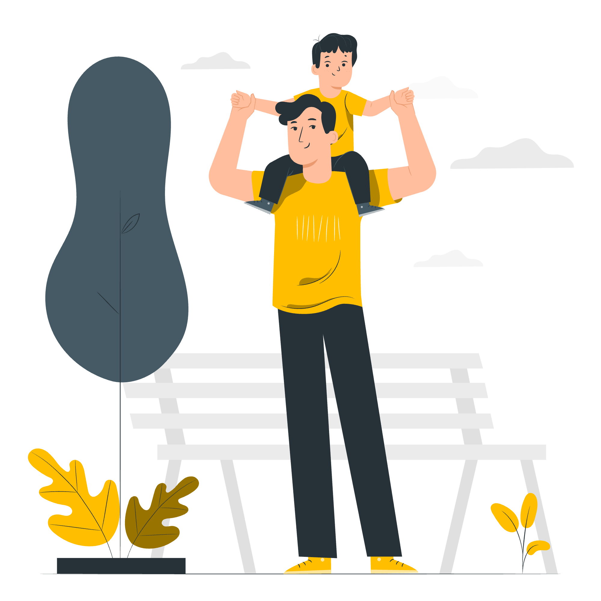

Lo udah lewatin semua pelajaran. Sekarang waktunya praktek terus, satu per satu. Hasil beda-beda tiap orang, tergantung konsisten dan praktek lo. Jangan masukin data sensitif ke AI, dan cek ulang semua fakta.
Kenalan, apa itu personal branding, kenapa pake AI, dan persiapan.
4 pelajaran
Modul 2 · Praktek 6 langkah
Dari kenali diri sampe evaluasi, lengkap dengan prompt yang bisa langsung disalin.
6 pelajaran
Modul 3 · Tanya jawab
Kesalahan yang sering terjadi dan pertanyaan yang sering muncul.
1 pelajaran
Modul 4 · Bonus
Ide konten 30 hari, template siap pakai, dan 30 prompt.
4 pelajaran
Modul 5 · Penutup
Ketentuan penggunaan konten dan kontak.
2 pelajaran
Modul 1 · Pelajaran 1 dari 17
Kenalan dulu
Ini catatan belajar gue, bukan janji hasil instan.

Gue bapak muda yang lagi belajar AI dari nol. Kursus ini gue susun buat pemula yang pengen mulai bangun personal branding di Instagram bareng Claude.
Cuma butuh HP dan Instagram
Gak perlu bisa ngoding
Ikutin urutannya, jangan diacak
Modul 1 · Pelajaran 2 dari 17
Apa itu personal branding?
Gambaran diri yang pengen lo bentuk di mata orang.
Bukan buat pamer, tapi buat nunjukin:
Lo jago apa?
Value apa yang lo bagiin?
Kenapa orang harus inget lo?
Kenapa harus dibangun?
Orang scroll cepet. Yang nempel di kepala biasanya akun yang jelas dan konsisten.
Lebih gampang dipercaya
Lebih gampang diinget
Peluang kerja dan kolaborasi lebih kebuka
Modul 1 · Pelajaran 3 dari 17
Kenapa pake AI?
Banyak pemula berhenti karena bingung mau mulai dari mana.
Claude itu asisten AI buatan Anthropic. Lo ngobrol pake bahasa biasa, dia bantu mikir dan nulis. Hasilnya: hemat waktu mikir ide, tulisan jadi lebih rapi, dan ada temen diskusi kapan aja.
Claude bisa bantu
Brainstorm niche dan ide konten
Nulis bio, caption, dan skrip
Nyusun jadwal posting
Ngerapihin tulisan lo
Ini tetap tugas lo
Pengalaman nyata dan cerita pribadi lo
Karakter dan gaya ngomong lo
Ngecek fakta sebelum posting
Keputusan akhir mau posting apa
Modul 1 · Pelajaran 4 dari 17
Siapin dulu
Cuma empat hal ini.
HP dengan kuota atau wifi
Akun Instagram
Akun Claude
Satu catatan buat nyimpen hasil
Belum punya akun Claude? Buka claude.ai di tab baru, daftar, lalu balik lagi ke sini.
30prompt siap pakaitinggal salin, ganti bagian yang disorot
Modul 4 · Pelajaran 13 dari 17
Ide konten 30 hari
Satu ide per hari, dibagi lima tahap.
Hari 1–6 · Kenalan
01Perkenalan: siapa gue & kenapa mulaiReels
02Cerita awal mulai belajar [topik]Carousel
033 hal yang gue pelajari minggu iniCarousel
04Kesalahan pertama gue sebagai pemulaReels
05Alat yang gue pakai tiap hariStory
06Rangkuman 5 hari + rencana besokFoto
Hari 7–12 · Berguna
07Tips 1 menit buat pemulaReels
08Mitos vs fakta soal [topik]Carousel
09Tutorial singkat langkah demi langkahCarousel
10Pertanyaan yang sering ditanya pemulaReels
11Before–after hasil belajar gueFoto
12Checklist yang bisa di-saveCarousel
Hari 13–18 · Dekat
13Di balik layar rutinitas gueStory
14Satu kegagalan & pelajarannyaReels
15Opini gue soal tren [topik]Reels
16Jawab komentar jadi kontenCarousel
17Surat buat diri gue setahun laluCarousel
18Sesi tanya jawabStory
Hari 19–24 · Percaya
19Rekomendasi buku, akun, alat favoritCarousel
20Progres nyata: angka dan buktiFoto
21Studi kasus kecil dari hasil gueCarousel
22Ucapan terima kasih ke followersStory
23Sapa atau kolaborasi sama akun lainReels
24Prinsip yang gue pegangCarousel
Hari 25–30 · Ajak
25Tantangan 7 hari, ajak ikutReels
26Bagi template gratisCarousel
27Pelajaran terbesar sejauh iniReels
28Sebulan lalu vs sekarangFoto
29Rencana 30 hari berikutnyaCarousel
30Ajakan follow, save, shareStory
Modul 4 · Pelajaran 14 dari 17
Template siap pakai
Tinggal salin, ganti bagian yang disorot.
Bio Instagram
[Panggilan] | [Peran, mis. bapak muda]
Belajar [topik] dari nol, dibagi di sini
[Satu manfaat buat pengikut]
👇 [Link]
Caption perkenalan
Halo, gue [Panggilan]. [Peran] yang lagi belajar [topik].
Kenapa gue mulai: [alasan singkat].
Di sini gue bakal bagi [apa yang dibagi] tiap [frekuensi].
Kalau lo juga lagi belajar [topik], follow aja. Boleh kenalan di komentar: lo lagi belajar apa?
Caption carousel edukasi
[Judul carousel]
Swipe sampai slide terakhir ya. Intinya:
1. [Poin 1]
2. [Poin 2]
3. [Poin 3]
Save postingan ini biar gampang dicari lagi. Poin mana yang paling berguna buat lo?
Caption cerita pribadi
[Kejadian singkat satu kalimat].
Waktu itu gue [perasaan atau kesalahan].
Sampai akhirnya gue sadar: [pelajaran].
Sekarang gue [yang gue lakukan beda]. Pernah ngalamin yang mirip?
Skrip Reels 30 detik
HOOK (0–3 dtk): [Kalimat pembuka yang bikin penasaran]
ISI 1: [Poin 1, satu kalimat]
ISI 2: [Poin 2, satu kalimat]
ISI 3: [Poin 3, satu kalimat]
PENUTUP: [Ajakan: simpan, komentar, atau follow]
Balasan komentar
Makasih udah mampir, [Nama]! [Jawaban singkat atas komentarnya]. Kalau mau lanjut, tanya aja di sini ya.
Balasan DM
Halo [Nama], makasih udah nge-DM. [Jawaban atau terima kasih atas pesannya]. Kalau ada yang mau ditanyain lagi, kabarin aja ya.
Caption ajakan (CTA)
[Satu kalimat ringkasan isi konten].
Kalau ini berguna: save, kirim ke temen yang lagi butuh, dan follow buat [apa yang bakal mereka dapat] berikutnya. Menurut lo, topik apa yang harus gue bahas selanjutnya?
Modul 4 · Pelajaran 15 dari 17
30 prompt siap pakai
Lima kategori, masing-masing enam prompt.
01Rapihin bio
Ketik di Claude
Gue [peran] yang lagi belajar [topik]. Bio gue sekarang: [bio lama]. Bikin 3 versi bio Instagram maksimal 150 karakter, bahasa santai, jangan lebay.
02Cari ciri khas
Ketik di Claude
Gue [peran], hobi [hobi], lagi belajar [topik]. Bantu cari 3 ciri khas yang bisa jadi identitas personal brand gue, kasih alasan singkat tiap ciri.
03Tentukan audiens
Ketik di Claude
Bantu gue jabarin audiens ideal buat konten tentang [topik]: siapa mereka, apa masalahnya, dan apa yang mereka cari di Instagram.
04Ide username
Ketik di Claude
Kasih 10 ide username Instagram yang gampang diingat buat [peran] yang bahas [topik]. Hindari angka acak dan garis bawah berlebihan.
05Susun highlight
Ketik di Claude
Susun 5 highlight Instagram buat akun gue tentang [topik], lengkap dengan nama pendek tiap highlight dan isi yang cocok.
06Pesan inti
Ketik di Claude
Rangkum posisi personal brand gue dalam 1 kalimat: gue [siapa], bantu [siapa], supaya [hasil]. Kasih 3 variasi.
0710 ide konten
Ketik di Claude
Kasih 10 ide konten Instagram buat pemula di bidang [topik], campur antara edukasi, cerita pribadi, dan ajakan interaksi.
084 pilar konten
Ketik di Claude
Bantu gue bikin 4 pilar konten buat akun [topik], dengan contoh 2 topik di tiap pilar.
09Ide ikut tren
Ketik di Claude
Kasih 5 ide konten yang nyambung sama tren umum soal [topik] tapi tetap sesuai gaya santai gue. Jangan sebut data tren yang lo gak yakin.
10Dari pengalaman
Ketik di Claude
Ini pengalaman gue minggu ini: [cerita singkat]. Ubah jadi 5 ide konten yang bermanfaat buat orang lain.
11Dari pertanyaan
Ketik di Claude
Ini pertanyaan dari followers: [pertanyaan]. Ubah jadi 3 ide konten: satu Reels, satu carousel, satu story.
12Kalender 7 hari
Ketik di Claude
Susun kalender konten 7 hari buat akun [topik], 1 konten per hari, lengkap dengan format dan judul singkat.
13Caption foto
Ketik di Claude
Tulis caption Instagram buat foto [deskripsi foto], gaya santai, maksimal 5 kalimat, diakhiri satu pertanyaan buat followers.
1410 hook
Ketik di Claude
Bikin 10 kalimat pembuka (hook) buat konten tentang [topik]. Maksimal 12 kata, bikin penasaran tapi tetap jujur.
15Catatan jadi caption
Ketik di Claude
Ubah catatan kasar ini jadi caption yang rapi, pertahankan gaya bicara gue: [catatan].
16Caption cerita
Ketik di Claude
Tulis caption cerita pribadi dari kejadian ini: [kejadian]. Struktur: masalah, momen sadar, pelajaran. Jangan dilebih-lebihkan.
17Variasi ajakan
Ketik di Claude
Kasih 8 variasi ajakan di akhir caption (simpan, bagikan, komentar, follow) yang gak terdengar maksa.
1815 hashtag
Ketik di Claude
Kasih 15 hashtag campuran (besar, sedang, kecil) buat konten tentang [topik]. Kelompokkan dan jelasin singkat cara pakainya.
19Reels 30 detik
Ketik di Claude
Tulis skrip Reels 30 detik tentang [topik]: hook 3 detik, 3 poin isi, penutup. Pakai bahasa lisan yang santai.
Bikin urutan 5 Story buat ngajak followers jawab pertanyaan soal [topik], termasuk teks stiker polling.
22Teks di layar
Ketik di Claude
Bikin teks singkat yang muncul di layar buat video ini: [ringkasan video]. Maksimal 6 kata per teks.
23Catatan jadi carousel
Ketik di Claude
Ringkas catatan ini jadi 1 carousel: [catatan]. Jangan nambah fakta baru.
24Alur Live 15 menit
Ketik di Claude
Susun alur Live Instagram 15 menit tentang [topik]: pembukaan, 3 bagian, tanya jawab, penutup.
25Balas komentar
Ketik di Claude
Ini komentar di postingan gue: [komentar]. Tulis 3 balasan ramah dan singkat dengan nada beda: santai, hangat, lucu.
26Balas DM
Ketik di Claude
Ada yang DM gue: [pesan]. Tulis balasan sopan dan jelas, tanpa janji yang gak bisa gue tepati.
27Evaluasi caption
Ketik di Claude
Ini caption gue: [caption]. Kasih 3 hal yang udah bagus dan 3 hal yang bisa diperbaiki, singkat aja.
28Baca performa
Ketik di Claude
Ini data postingan gue minggu ini: [jangkauan, like, simpan, komentar]. Baca polanya dan kasih 3 saran. Bilang kalau datanya kurang.
29Cek gaya bahasa
Ketik di Claude
Baca 3 caption gue: [caption 1, 2, 3]. Jelasin gaya bicara gue, lalu bikin panduan singkat biar tulisan berikutnya konsisten.
30Rencana bulan depan
Ketik di Claude
Ini ringkasan 30 hari gue: [ringkasan]. Bantu susun rencana 30 hari berikutnya dengan 3 target yang realistis.
Modul 5 · Pelajaran 16 dari 17
Ketentuan penggunaan konten
Biar sama-sama enak dan sama-sama baik.
Konten ini boleh di-copy-paste buat dijadiin ebook temen-temen lo, tapi wajib mementingkan perubahan: bagian yang gak baik atau gak cocok harus dihilangkan.
Boleh disalin dan dipakai buat bikin ebook sendiri
Wajib dirapihin dan disesuaikan, jangan asal tempel
Hilangin bagian yang gak baik atau gak sesuai
Modul 5 · Pelajaran 17 dari 17
Kontak
Ada pertanyaan atau mau ngobrol? Hubungi gue di sini.